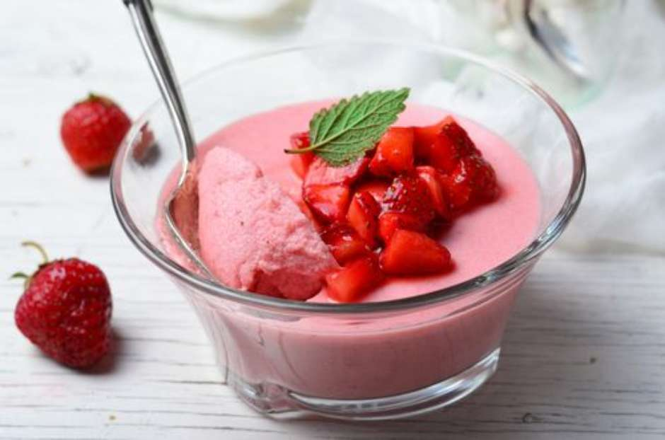

Receitas com morangos
Torta de morango:

Ingredientes
• Massa
• 1 xícara de farinha de trigo
1 gema batida
• 100 g de manteiga sem sal
• 2 colheres (sopa) de açúcar
• 1 colher (sopa) de fermento em pó
• Recheio
• 700 ml de leite
• 4 colheres de amido de milho
• 2 gemas peneiradas
• 1 e 1/2 lata de leite condensado
• Cobertura
• Morangos lavados e cortados ao meio
• 1 gelatina de morango
Modo de Preparo
1. Massa
2. Coloque a farinha, faça um buraco e coloque todos os outros ingredientes e mexa até a massa ficar homogênea e lisa.
3. Forre-a por completo na assadeira, como uma torta.
4. Coloque no forno por 20 minutos ou até começar a ficar douradinha nos lados
5. Reserve
6. Recheio
7. Mexa todos os ingredientes na panela até se soltar por completo, ficará um creme maravilhoso.
8. Deixe esfriar e jogue todo na assadeira com a massa já assada
Cobertura
9. Coloque os morangos um ao lado do outro, até que feche por completo de morangos em cima.
10. Gelatina
11. Deixe-a gelar até ficar na consistência de a colher pegar a gelatina, mas ainda um pouquinho mole.
12. Já nesse ponto coloque a gelatina aos poucos em cima da torta deixando os morangos por completo cobertos com a gelatina, coloque novamente para gelar.
Mouse de morango

Ingredientes
• 2 caixas de morangos frescos
• 1 lata de leite condensado
• 1 lata de creme de leite
• 1 caixinha de gelatina de morango
Modo de preparo
1. Bata os morangos no liquidificador e acrescente aos poucos o leite condensado e o creme de leite.
2. Prepare a gelatina conforme as instruções do fabricante e acrescente à mistura do liquidificador.
3. Bata todos os ingredientes juntos por 2 minutos.
4. Despeje o creme em uma travessa de vidro e leve à geladeira por 1 hora.
5. Ao retirar da geladeira, decore a mousse com a outra caixa de morangos, mantendo-o na geladeira.
Brigadeiro com recheio de morango
Ingredientes:
1 lata de leite condensado
1 colher (sopa) de manteiga
3 colheres (sopa) de chocolate em pó
30 morangos inteiros
Chocolate granulado a gosto
Modo de preparo:
Em uma panela, coloque o leite condensado, a manteiga e o chocolate em pó. Leve ao fogo até dar o ponto, quando soltar do fundo da panela. Deixe esfriar. Envolva cada morango no brigadeiro e faça bolinhas. Em seguida, passe pelo chocolate granulado.
Sirva em seguida.